Tips para operar
Ordenamientos
En las pantallas donde se listan datos, los mismos pueden ordenarse por diferentes columnas de manera ascendente o descendente.
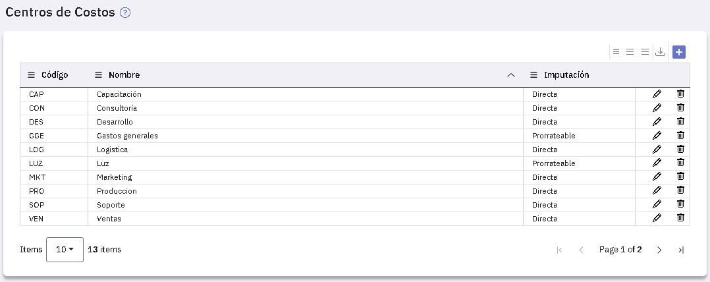
Para ordenar por alguna de las columnas, hace clic sobre ella y verás (a la derecha de la misma) una flechita que indica que los datos están ordenados en forma ascendente: 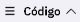.
Si volves a hacer clic, los ordenará en forma descendente. Con cada clic se cambia el ordenamiento de los datos de la columna donde estás ubicado.
Búsquedas en informes
Si tenés que buscar un dato en un listado, como por ejemplo el centro de costos "Marketing" en el siguiente:
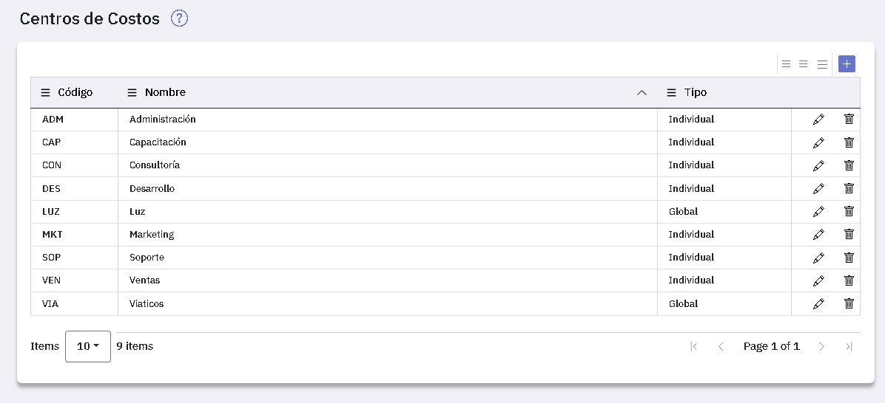
Podés presionar el botón disponible en la columna por la que queres buscar.
En la ventana que se abre ingresas el dato a buscar, o parte del mismo, y se exhiben todas las filas que lo contienen.
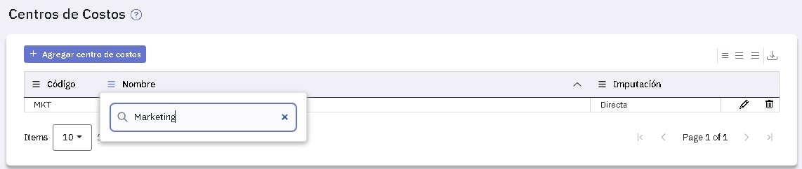
Expandir y colapsar informes
En el encabezado de los informes dispones de los botones "Expandir todo" y "Colapsar todo". El primero corresponde al informe que se emite cuando lo solicitás e incluye toda la información y el segundo la muestra en una línea. El siguiente es un ejemplo de informe del diario colapsado.
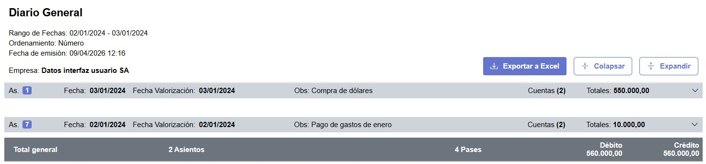
En los informes colapsados, haciendo clic en una línea, desplegás su información en forma detallada. Acá te mostramos la información detallada correspondiente al asiento número 1 del informe anterior.
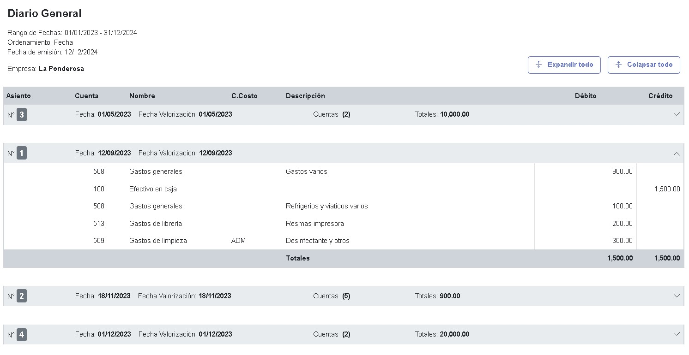
Búsquedas de datos
Cuando tenés que ingresar un dato en una pantalla que diste de alta en otra tabla, como por ejemplo una cuenta al registrar un asiento, dispones de una 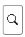.
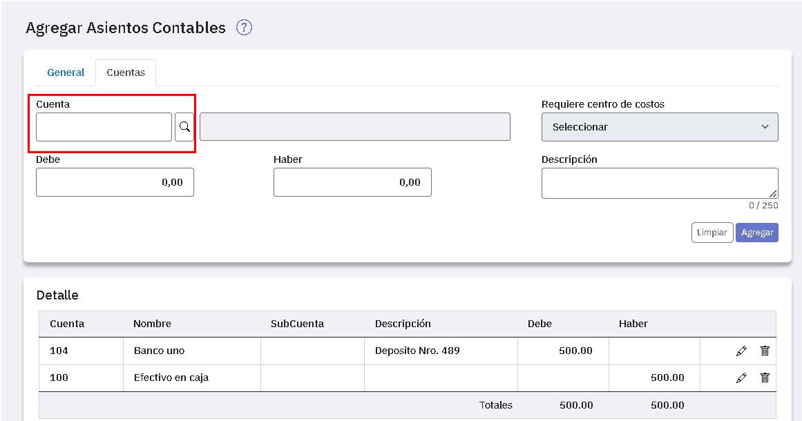
Cuando la presionas se abre una ventana donde podes buscar la cuenta y seleccionarla con el tilde que figura a la izquierda.
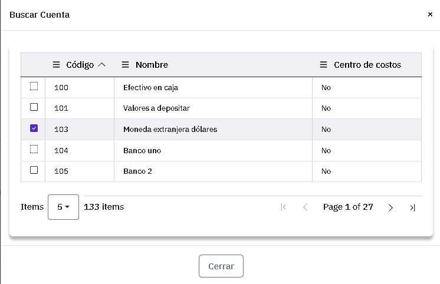
Al tildar el dato que seleccionaste, éste se carga en la pantalla.
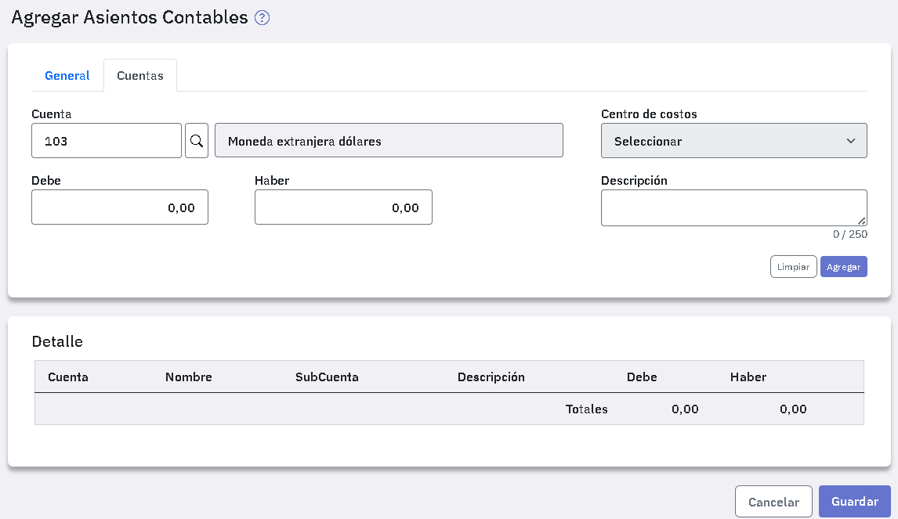
Filtros
Si el contenido de alguna columna es un dato que corresponde a diferentes opciones, como por ejemplo el dato "Tipo" de los centros de costos, que prevé dos valores (Individual o Global), el botón actúa como filtro:
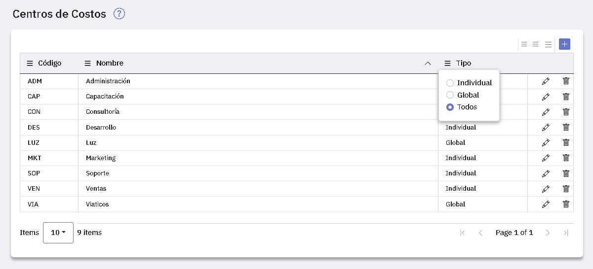
Si tildás global, el listado solo exhibe los centros de costos de tipo global.
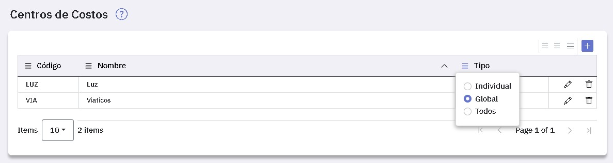
Visualización de datos a incluir en la pantalla
En todas las pantallas que muestran listados, disponés de facilidades para su consulta.
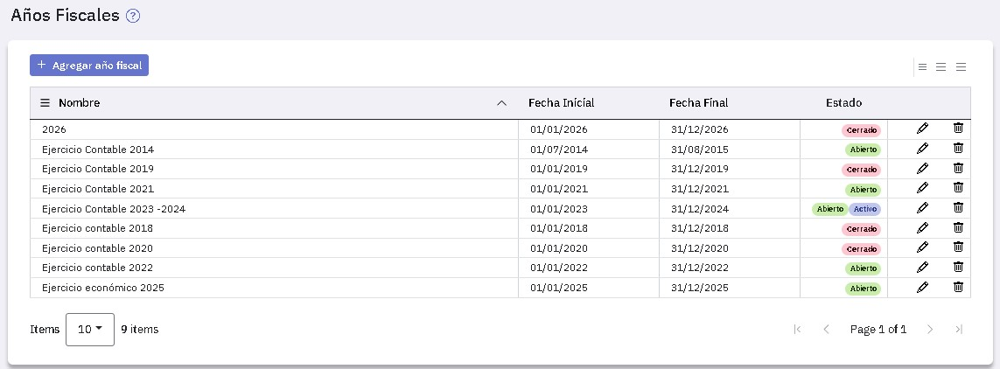
Al pie, a la izquierda, podes seleccionar la cantidad de líneas a incluir en la pantalla mediante este botón 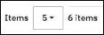.
También al pie, y a la derecha, disponés de botones para moverte entre páginas: 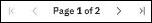.
Espaciado entre líneas de listas
En todas las listas podes elegir el espaciado entre líneas que te quede más cómodo.
Para ello dispones de estos iconos: 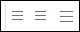 que te permiten establecer tres espaciados diferentes.
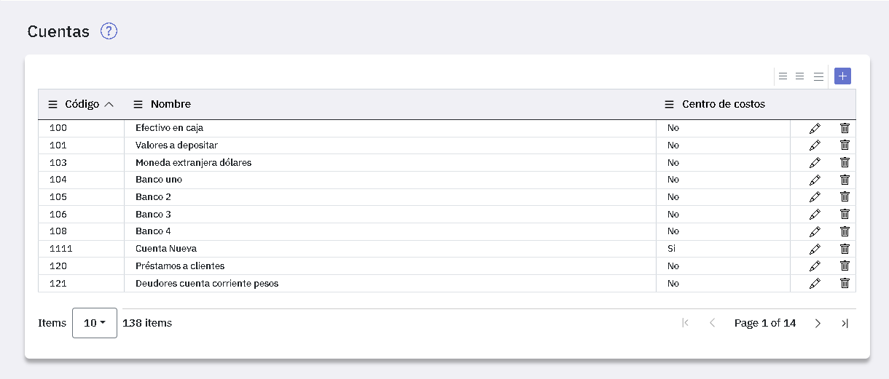